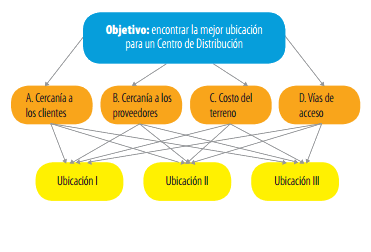
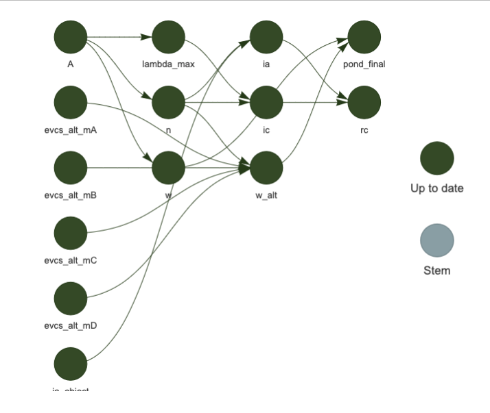

| A | B | C | D | |
|---|---|---|---|---|
| A | 1 | 0.14 | 0.2 | 0.33 |
| B | 7 | 1.00 | 0.5 | 2.00 |
| C | 5 | 2.00 | 1.0 | 2.00 |
| D | 3 | 0.50 | 0.5 | 1.00 |
9 AHP Uso General
Analytical Hierarchy Process (AHP) Uso General
La presente sección tiene como objetivo mostrar el uso de AHP en un caso de decisión multicriterio de uso general, considerando todas sus etapas en el leguaje de programación en R.
Se urilizará AHP para decidir dónde localizar un depósito o centro de distribución. Estas resoluciones son siempre complejas, porque involucran inversiones importantes y porque una correcta ubicación puede impactar en ventajas competitivas.

En el siguiente ejemplo, simplificaremos el tipo y la cantidad de variables para ilustrar la aplicación de este método. Imaginemos que se requiere encontrar la mejor ubicación para un Centro de Distribución. Se tienen tres ubicaciones posibles, que designaremos como I, II y III. Un equipo multidisciplinario, luego de una jornada de análisis, seleccionó cuatro criterios para decidir entre ellas:
- Cercanía a los clientes
- Cercanía a los proveedores
- Precio del terreno
- Vías de acceso
Se debe encontrar la mejor ubicación para un centro de distribución, eligiendo la mejor combinación de los criterios A, B, C y D. Las ubicaciones posibles son I, II y III.
9.1 Matriz de Comparación
El primer paso es comparar de a pares los criterios A, B, C y D. El equipo encargado del análisis asignó notas comparando cada ubicación con otra. Así, por ejemplo, el criterio B (cercanía a los proveedores) se juzgó 7 veces más importante que el criterio A (cercanía a los clientes).
Construcción de una matriz de comparación de criterios (todos con todos),el valor de cada a_{ij} corresponde a la importancia relativa del criterio C_i (fila i) sobre el criterio C_j (columna j), según la escala fundamental propuesta por Saati (Table 6.1).
m <- matrix(c(1, 1/7, 1/5, 1/3,
7, 1, 1/2, 2,
5, 2,1,2,
3, 1/2,1/2,1),
nrow = 4, ncol = 4, byrow = T)
names_criterios <- c("A", "B", "C", "D")
colnames(m) <- rownames(m) <- names_criterios
m %>% round(2) A B C D
A 1 0.14 0.2 0.33
B 7 1.00 0.5 2.00
C 5 2.00 1.0 2.00
D 3 0.50 0.5 1.00Se observa que cumple con los requisitos de robustez matemática de Reciprocidad y Homeneidad (Section 6.3)
9.2 Valor propio dominante (\lambda_{max})
# Obtener los autovalores de la matriz
eigenvalues <- function(matriz, normalize = F){
eigenvalues <- abs(eigen(matriz)$values)
if(normalize==T){
eigenvalues <- eigenvalues/sum(eigenvalues)
}
return(eigenvalues)
}
# Función lambda maximo
lambda_max_fnc <- function(matriz){
eigenvalues <- eigenvalues(matriz, F)
lambda_max <- max(abs(eigenvalues))
return(lambda_max)
}lambda_max <- lambda_max_fnc(m)
lambda_max[1] 4.101599.3 Análisis de Consistencia
Una parte importante es verificar la consistencia de la matriz de comparaciones pareadas. La matriz A es consistente si aij.ajk = aik para i,j,k = 1,2,...,n (Section 6.3). Para validar la consistencia razonable de los juicios en la matriz de comparación por pares se calcula el índice de consistencia (IC) (Equation 9.1) y la razón de consistencia (RC) (Equation 9.2).
La razón de consistencia (RC) se calcula a partir de un índice de consistencia aleatorio (IA), que varía de acuerdo con el tamaño de la matriz A (Table 9.2). La matriz se considera consistente si RC < IA; en caso contrario, se considera inconsistente y se aplica la corrección de consistencia planteada por Saaty (2003).
IC = \frac{\lambda_{max}-n}{n-1} \tag{9.1}
Cálculo del índice de consistencia IC
# conocer la dimensión de la matriz cuadrada
dim_m <- function(matriz){
if(any(diag(matriz)!=1)) stop("Diagonal de la Matriz debe ser 1")
n <- dim(matriz)[1]
return(n)
}
# indice de consistencia
ic_fnc <- function(l_max, n){
ic <- (l_max-n)/(n-1)
return(ic)
}n <- dim_m(m)
n[1] 4IC <- ic_fnc(l_max = lambda_max, n = n)
IC[1] 0.0338635Cálculo del índice de consistencia aleatoria IA
Para cancular la consistencia aleatoria IA es necesario contar con un parámetro dado por la dimensión n de la matriz de comparaciones, como se observa a continuación (Table 9.2):
| 1 | 2 | 3 | 4 | 5 | 6 | 7 | 8 | 9 | 10 | 11 | 12 |
| 0.00 | 0.00 | 0.52 | 0.89 | 1.11 | 1.25 | 1.35 | 1.40 | 1.45 | 1.49 | 1.52 | 1.54 |
Función para encontrar el parámetro de consistencia aleatoria IA de acuerdo a la dimimensión de la matriz de comparaciones.
# consistencia aleatoria
ia_fnc <- function(ia_object, n_dim){
ia <- filter(ia_object, n == n_dim) %>%
pull(ia)
return(ia)
}IA_params <- readRDS("data/rds/IA.rds")
IA_params n ia
1 1 0.00
2 2 0.00
3 3 0.52
4 4 0.89
5 5 1.11
6 6 1.25
7 7 1.35
8 8 1.40
9 9 1.45
10 10 1.49
11 11 1.52
12 12 1.54IA <- ia_fnc(ia_object = IA_params, n_dim = n)
IA[1] 0.89Cálculo del Razón de Consistencia RC
RC = \frac{IC}{IA} \tag{9.2}
# Razón de consistencia
rc_fnc <- function(IC, IA){
rc <- IC/IA
if(rc > IA){
print(paste0("Error: La razón de consistencia (",rc, ") es mayor que ", IA))
stop("La Matriz de Comparación es Incosistente")
}else{
print(paste0("La Matriz de comparación es Consistente"))
}
return(rc)
}RC <- rc_fnc(IC = IC, IA = IA)[1] "La Matriz de comparación es Consistente"RC[1] 0.03804887La matriz se considera consistente ya que RC (0.0380489) es menor que IA (0.89) de acuerdo a lo planteado por Saaty (2003).
9.4 Vector propio (w)
eigenvectors <- function(matriz, normalize = F){
eigenvectors <- abs(eigen(matriz)$vectors)[,1]
if(normalize==T){
eigenvectors <- eigenvectors/sum(eigenvectors)
}
return(eigenvectors)
}w <- eigenvectors(m, normalize = T)
w[1] 0.0622688 0.3270286 0.4286519 0.1820507# Función para calcular el vector propio utilizando el método de potencias
w_potencias <- function(A, tol = 1e-6, maxiter=100) {
x0 <- rep(1, dim_m(A))
n <- length(x0)
x <- x0/norm(matrix(x0, ncol = 1))
k <- 0
while (k < maxiter) {
k <- k + 1
y <- A %*% x
lambda <- sum(y * x)
x <- y/norm(y)
if (abs(lambda - sum(y * x)) < tol) break
}
# list(x = x, lambda = lambda)
x <- as.vector(x)
return(x)
}w2 <- w_potencias(m)
w2[1] 0.06226882 0.32702870 0.42865174 0.182050739.5 Ponderación de Alternativas
A. Cercarnía a Clientes:
mA <- matrix(c(1, 3, 1/3,
1/3, 1, 5,
3, 1/5,1),
nrow = 3, ncol = 3, byrow = T)
names_alternativas <- c("I", "II", "III")
colnames(mA) <- rownames(mA) <- names_alternativas | I | II | III | |
|---|---|---|---|
| I | 1.00 | 3.0 | 0.33 |
| II | 0.33 | 1.0 | 5.00 |
| III | 3.00 | 0.2 | 1.00 |
wA <- eigenvectors(mA, normalize = T)
wA[1] 0.3301350 0.3914183 0.2784467B. Cercarnía a Proveedores:
mB <- matrix(c(1, 1/5, 3,
5, 1, 7,
1/3, 1/7,1),
nrow = 3, ncol = 3, byrow = T)
names_alternativas <- c("I", "II", "III")
colnames(mB) <- rownames(mB) <- names_alternativas| I | II | III | |
|---|---|---|---|
| I | 1.00 | 0.20 | 3 |
| II | 5.00 | 1.00 | 7 |
| III | 0.33 | 0.14 | 1 |
wB <- eigenvectors(mB, normalize = T)
wB[1] 0.18839410 0.73064467 0.08096123C. Costo de Terreno:
mC <- matrix(c(1, 1/5, 3,
5, 1, 7,
1/3, 1/7,1),
nrow = 3, ncol = 3, byrow = T)
names_alternativas <- c("I", "II", "III")
colnames(mC) <- rownames(mC) <- names_alternativas| I | II | III | |
|---|---|---|---|
| I | 1.00 | 0.20 | 3 |
| II | 5.00 | 1.00 | 7 |
| III | 0.33 | 0.14 | 1 |
wC <- eigenvectors(mC, normalize = T)
wC[1] 0.18839410 0.73064467 0.08096123D. Vías de Acceso:
mD <- matrix(c(1, 5, 1/4,
1/5, 1, 1/8,
4, 8,1),
nrow = 3, ncol = 3, byrow = T)
names_alternativas <- c("I", "II", "III")
colnames(mD) <- rownames(mD) <- names_alternativas| I | II | III | |
|---|---|---|---|
| I | 1.0 | 5 | 0.25 |
| II | 0.2 | 1 | 0.12 |
| III | 4.0 | 8 | 1.00 |
wD <- eigenvectors(mD, normalize = T)
wD[1] 0.23704170 0.06434302 0.698615289.6 Decisión Final
w_aternativas <- matrix(c(wA, wB, wC, wD),
nrow = 3, ncol = 4, byrow = F)
names_criterios <- c("A", "B", "C", "D")
names_alternativas <- c("I", "II", "III")
colnames(w_aternativas) <- names_criterios
rownames(w_aternativas)<- names_alternativas| A | B | C | D | |
|---|---|---|---|---|
| I | 0.3301350 | 0.1883941 | 0.1883941 | 0.2370417 |
| II | 0.3914183 | 0.7306447 | 0.7306447 | 0.0643430 |
| III | 0.2784467 | 0.0809612 | 0.0809612 | 0.6986153 |
Producto punto de los pesos del criterio w y pesos por cada alternativa en cada criterio w_alternativas
resultados <- w_aternativas %*% w
colnames(resultados) <- "Decisión"| Decisión | |
|---|---|
| I | 0.2060765 |
| II | 0.5882208 |
| III | 0.2057028 |
De acuerdo a la tabla anterior se puede resolver que la alternativa idónea es la alternativa II que tiene 0.588 de valoración.
9.7 Diagrama de flujo de trabajo

9.8 Referencias de Sección
Valores de ejemplo obtenidos de: Aplicando AHP para decisiones complejas